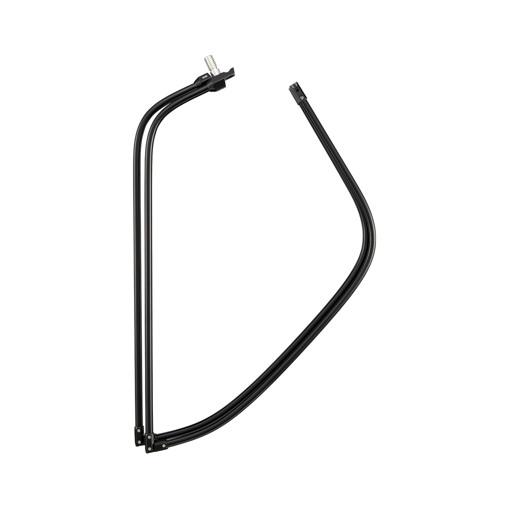
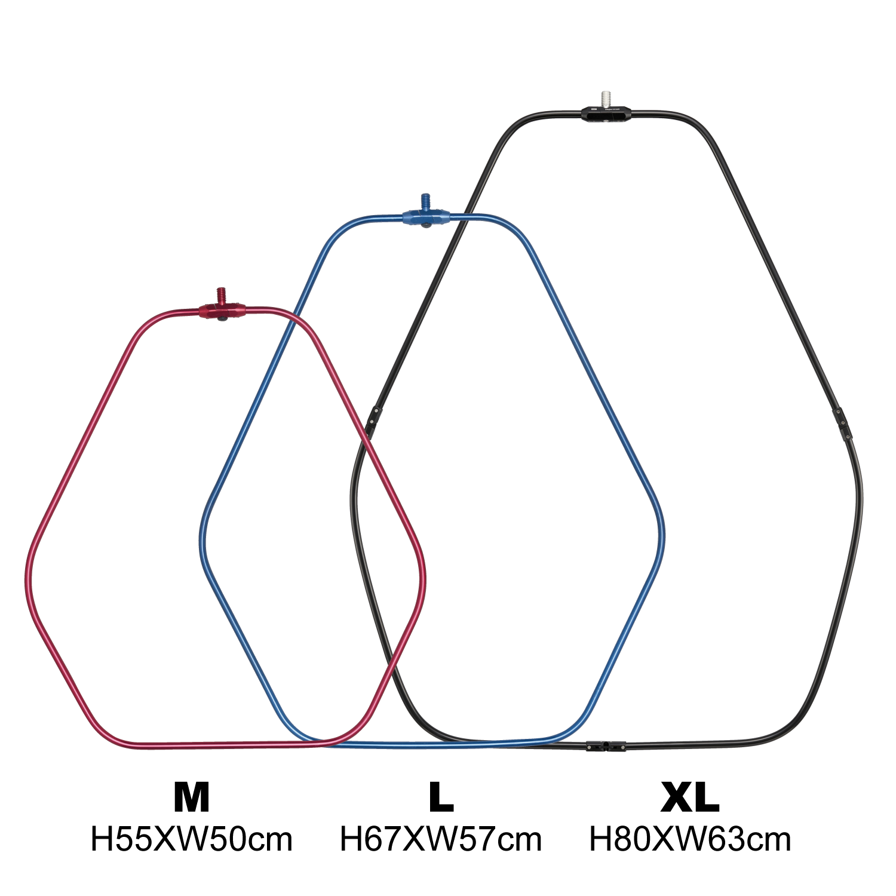
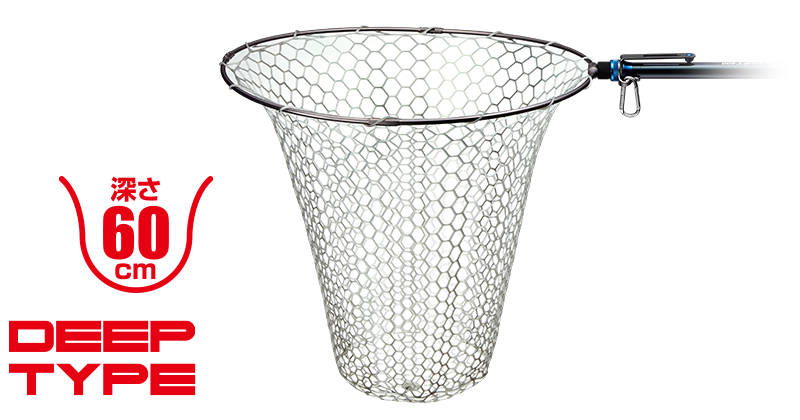

ヘキサネットXL
ヘキサネットXLはMajor Craft（メジャークラフト）のランディングネットです。
ヘキサネットの四つ折りモデルに追加された最大サイズで、メータークラスのサワラやブリの取り込みにも対応。間口の広いヘキサゴン（6角）形状で、大きな魚も迎え入れやすくなっています。

画像出典:メジャークラフト公式HP
スペック
- メーカー
- Major Craft（メジャークラフト）
- タイプ
- ランディングネット（4ピース・四つ折り）
- サイズ
- H80cm×W63cm×深さ80cm
- カラー
- ブルー／ブラック／ガンメタ
- 対応魚
- メータークラスのサワラ・ブリなど
- 価格
- 9,020円（税込）
- 発売
- 2026年10月
▼今すぐチェック

ヘキサネットXLの特徴
四つ折りで持ち運べる、メータークラス対応のヘキサゴンネット
-
メータークラスを受け止めるXLサイズ
H80cm×W63cm、深さ80cmの大きなフレームとネットで、メータークラスのサワラやブリの取り込みに対応する。M・Lでは小さいと感じていた人の次の1枚になる。
-
間口の広いヘキサゴン形状
間口の広い6角形のフレームで、魚を入れやすい。ストレート部が防波堤の壁にぴったり付くので安定し、ランディングの逃げ場も減らせる。
-
四つ折りと張りのあるネット
四つ折りタイプなので大きなサイズでも持ち運びやすい。張りのあるハイグレードネットを標準装備している。

ネットを外したフレームの状態です。ヒンジの部分で折りたためるので、縦80cmの大きな枠でも持ち運びや収納がしやすくなります。根元のネジでランディングシャフトに取り付けます。
画像出典:メジャークラフト公式HP
ヘキサネットXLの使い方
ランディングシャフトの先に取り付けて使います。魚を弱らせたら、ネットを水中で待たせ、頭から魚を誘導して入れるのが基本です。
防波堤では、フレームのストレート部を壁に沿わせると安定します。使い終わったら真水で洗って乾かしてから、四つ折りにして収納しましょう。
ヘキサネットXLがおすすめの人
防波堤や磯から、サワラやブリなどの大型魚を狙う人に向いたランディングネットです。
魚が大きいほど、最後の取り込みに余裕があるネットが安心につながります。
せっかく釣れた大物を足元で逃さないために、大型魚を狙う日の備えにしたい1枚です。
ワンポイント
サイズが大きいぶん、シャフトにもそれなりの強度が必要です。強度に余裕のあるランディングシャフトと組み合わせると安心です。
ネットの重さは公式に記載がないため、手持ちのシャフトとの相性は購入前に確認しましょう。
ヘキサネットのサイズの使い分け
| サイズ（4ピース） | H×W×深さ | 価格（税込） |
|---|---|---|
| M | 55cm×50cm×60cm | 6,600円 |
| L | 67cm×57cm×75cm | 7,480円 |
| XL | 80cm×63cm×80cm | 9,020円（本記事のモデル） |
1ピースモデルもMとLの2サイズがあります（M 5,720円／L 7,480円）。XLは4ピースだけのサイズです。

M（H55cm×W50cm）、L（H67cm×W57cm）、XL（H80cm×W63cm）のフレームを重ねた比較です。XLはMより縦が25cm、横が13cm大きく、間口の広さの違いがひと目で分かります。
画像出典:メジャークラフト公式HP
ヘキサネットXLに合わせるネット
ネットを替えるなら、ゴールデンミーンのGM スペアラバーネットの深さ60cm（ディープタイプ）がオススメです。理由は3つあります。

画像出典:ゴールデンミーン公式HP
-
魚にやさしい
クリアーラバーネットは魚にやさしい素材。リリースする魚を傷つけたくない時にも安心して使える。
-
網目が大きく、ルアーのフックが引っ掛かりにくい
網目が大きいので、ルアーのフックが引っ掛かりにくい。取り込んだ後にフックを外す手間が減り、次のキャストまでの時間も短くできる。
-
フックで網がほころばない
ラバー素材なので、フックが当たっても網がほころばない。トレブルフックの付いたルアーを使う釣りでも、長く使いやすい。
- 商品名
- GM スペアラバーネット ディープタイプ
- メーカー
- Golden Mean（ゴールデンミーン）
- 素材
- クリアーラバーネット
- 深さ
- 60cm
- 自重
- 410g
- 対応枠サイズ
- 50〜60cm（メーカー公表）
- 価格
- 4,900円（税別）
※メーカーが公表している対応枠サイズは50〜60cmで、ヘキサネットXL（H80cm×W63cm）はそれより大きいサイズです。取り付けは自己責任で、購入前にサイズをご確認ください。

あわせてチェックしたいアイテム
-
 ランディングシャフト LS-450XD
アピア
詳細はこちら＞
ランディングシャフト LS-450XD
アピア
詳細はこちら＞
全長4.5m・自重756gの高剛性シャフト。大物用のネットを支えたい時に組み合わせたい。
-
 ザ・グランドシャフト450
アピア
詳細はこちら＞
ザ・グランドシャフト450
アピア
詳細はこちら＞
全長4.5m・自重804gのカーボン95%シャフト。さらに強度を重視したい人に。
-
 ガネット
アピア
詳細はこちら＞
ガネット
アピア
詳細はこちら＞
磯や堤防で大物を狙うなら揃えておきたいフローティングベスト。